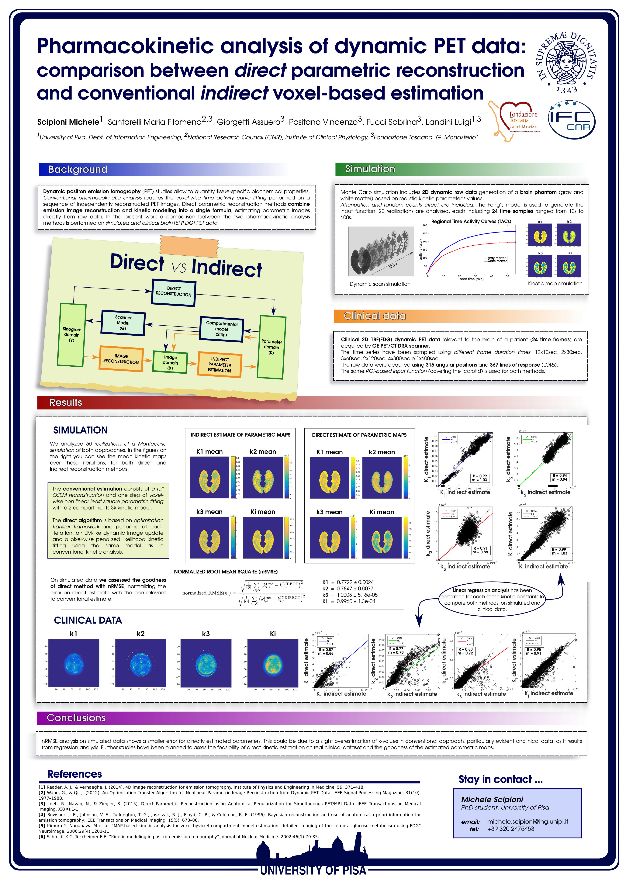

Pharmacokinetic analysis of dynamic PET data: comparison between direct parametric reconstruction and conventional indirect voxel-based estimation

Introduction
Dynamic positron emission tomography (PET) studies allow to quantify tissue-specific biochemical properties. Conventional pharmacokinetic analysis requires the voxel-wise time activity curve fitting performed on a sequence of independently reconstructed PET images. Direct parametric reconstruction methods combine emission image reconstruction and kinetic modeling into a single formula, estimating parametric images directly from raw data. In the present work a comparison between the two pharmacokinetic analysis methods is performed on simulated and clinical brain 18F[FDG] PET data.
Methods
Monte Carlo simulation includes 2D dynamic raw data generation of a brain phantom (gray and white matter) based on realistic kinetic parameter’s values. Attenuation and random counts effect are included. The Feng’s model is used to generate the input function. 20 realizations are analyzed, each including 24 time samples ranged from 10s to 600s.
Clinical
2D 18F[FDG] PET data relevant to the brain of a patient (24 time frames) are acquired by GE PET/CT DRX scanner. The same ROI-based input function (covering the carotid) is used for both methods. The conventional estimation consists of a full OSEM reconstruction and one step of voxel-wise non linear least square parametric fitting with a 2 compartments-3k kinetic model. The direct algorithm is based on optimization transfer framework and performs, at each iteration, an EM-like dynamic image update and a pixel-wise penalized likelihood kinetic fitting using the same model as in conventional kinetic analysis. On simulated data we assess the goodness of direct method with nRMSE, normalizing the error on direct estimate with the one relevant to conventional estimate. Linear regression is then performed for each of the kinetic constants on simulated and clinical data.
Results
nRMSE values for K1, k2, k3 and Ki parameters are 0.7722±0.0024, 0.7847±0.0077, 1.0003±5.16e-05, 0.9960±1.3e-04, respectively. Regression analysis on simulated data (fig.1) gives following angular coefficients (and R value) for each k-parameter: 1.03(0.99), 0.94(0.94), 0.88(0.91), 1.03(0.99). The same test on clinical data (fig.2) gives: 0.88(0.87), 0.70(0.77), 0.72(0.80), 0.91(0.95).
Conclusions
nRMSE analysis on simulated data shows a smaller error for directly estimated parameters. This could be due to a slight overestimation of k-values in conventional approach, particularly evident on clinical data, as it results from regression analysis.